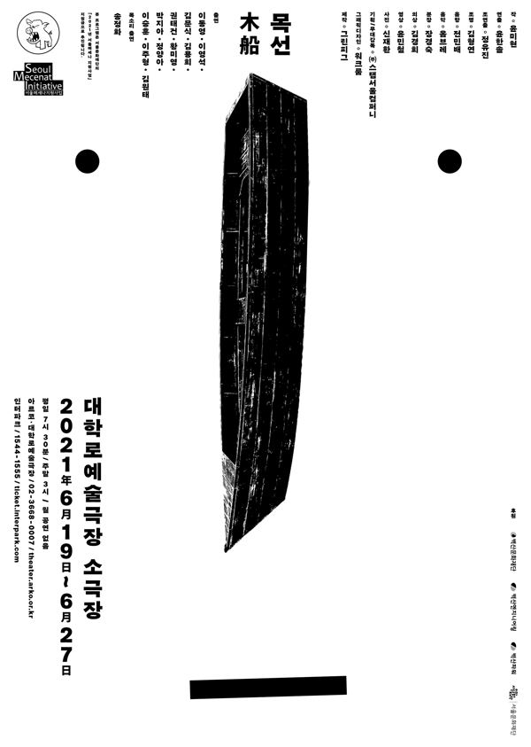

윤미현 작, 윤한솔 연출

해마다 동해안과 일본 해안에서 북한 목선이 발견되고, 맨몸으로 군사 경계망을 넘는 '헤엄 귀순'과 '헤엄 월북'이 벌어진다. 작품은 헤엄을 치고 목선에 오르는 이들의 절실함과, 그들을 둘러싼 사람들의 이율배반적인 태도에 주목한다. 잊을 수 없는 역사와 잊고 사는 이들, 그것을 이용하는 이들이 공존하는 오늘의 한국을 그린다. 제9회 벽산희곡상 수상작.
2021.6.19–27 / 대학로예술극장 소극장 - 제9회 벽산희곡상 수상작
2021.8.18–19 / 춘천 축제극장몸짓 - 춘천공연예술제 초청
작: 윤미현
연출: 윤한솔
조연출: 정유진
조명: 김형연
음향: 전민배
음악: 옴브레
분장: 장경숙
의상: 김경희
영상: 윤민철
사진: 신재환
기획·무대감독: 스탭서울
그래픽디자인: 워크룸
출연: 이동영, 이영석, 김문식, 김용희, 권태건, 황미영, 박지아, 정양아, 이승훈, 이주형, 김원태
후원: 서울문화재단 서울메세나 지원사업
2021 리뷰, 『연극평론』 2021 가을호
이전: 〈CAVE-2021 Seoul Version〉 | 다음: 〈홈스윗홈-도로시편〉
아카이브로 돌아가기